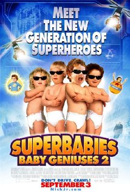

ReviewSkimmer.com
Charts
Presentation
About
Superbabies: Baby Geniuses 2

"This is quite possibly the
worst
movie ever made."
—
nadbruce
"Words cannot truly describe how down and out
awful
this movie was!"
—
davet14
"Alas, it was so
bad
that my daughter insisted we leave."
—
nadbruce
"well he was right about one thing, it was
terrible
."
—
I_Love_Catherine_Zeta
"Scott Baio finally proved that he could be in something
worse
than "Joanie loves Chachi"."
—
davet14